はじめに
HappyMemo は、キーボードを使わない新しいタイプのメモ帳です。
アナログ（画像）文字を扱うため、以下のような独自の機能が幾つか備わっています。
1) 入力パレット
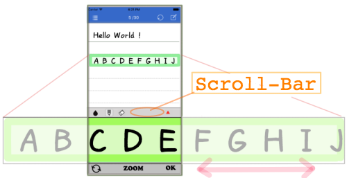
文字を書く時は、下から現れる入力用のエリア（入力パレット）を使用します。
パレットサイズは表示文字の４倍もあるのでスマホ画面ではその一部分しか見られません。
その為、表示文字の前後を見るにはパレット上部に在るスクロールバーをなぞってパレット全体を左右にスクロールできます。
また、パレット下にある "ZOOM"ボタン をタップすると更にパレットサイズが1.5倍になります。この機能は、複雑な漢字などを書く場合に有効な手段となります。
2) 書き終えた文章の編集
HappyMemo には、一旦書き終えた文字や文章を修正・編集する機能があります。入力パレット上部のスクロールバーの右端の ▲ をタップすると赤色半透明の"編集パネル"が現れます。
このパネルには４種類の編集モード（上書き、挿入、削除、クリア）がアイコンで配置されていますので、この中から必要な方法を選んで編集することができます。もちろん以前に書いた文も同様に編集できます。
例）上書き(OVW)モード：

3) 豊富なジェスチャー操作
軽快な操作環境を実現するために HappyMemoでは幾つかのジェスチャー操作”が用意されています。
例えば、
"スワイプ" 動作：
・ページめくりを行います。
"長押し" 動作：
・選択したメモ行の内容をパレットに表示します。
"エッジスワイプ" 動作：
・入力し易いようにパレット位置を自動調整します。
その他、パレットの表示/非表示や改行操作などもジェスチャーで対応しています。
操作画面とボタンの説明
HappyMemo では、メモ画面とインデックス画面の２つの画面が基本画面となります。
アプリを起動すると前回の最終編集ページのメモ画面が開きます。
その後このメモ画面の上に "パレット" や "編集パネル"を開いて入力作業を行います。
-- 起動画面 --
[1]：入力パレット ON/Off ボタン
[2]：メニュー ボタン
[3]：ページ番号（表示のみ）
[4]：インデックス表示 ボタン
-- 入力パレット --
[5]：行選択カーソル
[6]：入力パレット
[7]：確定 ボタン
[8]：パレット拡大 ボタン
[9]：Undo/redo ボタン
[10]：スクロールバー
[11]：編集パネル表示 ボタン
[12]：ペン色切り替えボタン
[13]：ペン選択 ボタン
[14]：修正ペン選択 ボタン
-- 編集パネル --
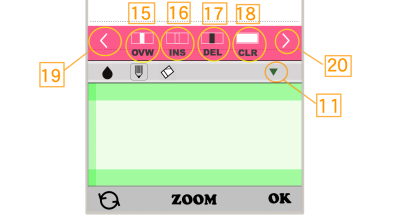
[15]："上書き" 編集ボタン
[16]："挿入" 編集ボタン
[17]："部分削除" 編集ボタン
[18]："全クリア" 編集ボタン
[19]："文頭へ" カーソル拡張ボタン
[20]："文末へ" カーソル拡張ボタン
- ボタン[11]は編集パネルが表示されると、
"パネルを閉じる" ボタンになる。
-- インデックス画面 --

[21]：各ページ内容が目次として
表示される
[22]：ページ番号
[23]：各ページの最終更新日
- ボタン[4]を押すと、インデックスを閉
じて元の "メモページ" に戻る。
-- メニュー画面 --
[25]：今日の日付を１行目に追加
[26]：現行ページ内容をクリアする
[27]：現行ページをJpegファイルで保存
[28]：設定画面を開く
[29]：スタートガイドを開く
[30]：メニューを閉じる
-- 設定画面 --
[文字線の太さ]：
細線、標準（初期値）、太線 から選択
[文字の色]：
３番目の色を選択（初期値：青）
[自動スクロール]：
On: 使用する（初期値) / Off: 使用しない
[全ページ削除]：
全ページの内容のクリア、及び設定内容の初期化を実行する
- 設定を変更後、"決定" で更値が保存されます。
"戻る" を選ぶと変更内容はキャンセルされます。
-- スタートガイド画面 --
[31]：画面のTopまでスクロールする
[32]：メモページに戻る
[33]：表示言語を日本語にする
[34]：表示言語を英語にする
- 文中の △ マークをタップするとTopメニューに戻ります。
( ◁ マークの場合はセクションメニューに戻ります。)
基本操作
ここでは、HappyMemo の基本的な使い方を説明します。
- 希望するページに移動する
- 入力行をパレットに表示する
- パレットに文字を書く
- 書いた文字を確定する
- パレットをスクロールする
- 文字を追加する
- 改行する
- 文字線の種類を変更する
- 書き終えた文字を修正する
- パレットを閉じる
- タイトルに日付を付ける
- ページ内容を消去する
- ページ内容を保存する
-- 1. 希望するページに移動する --
以下に示すように、ページを開くには３種類の方法があります。
これらの方法を適時組み合わせて希望するページに移動します。
① アプリ起動時には、前回最後に編集(入力、修正)されたページが表示されます。
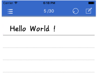
② ページめくりで移動する。
- 右から左にスワイプ：次ページに進む
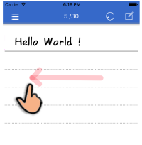
- 左から右にスワイプ：前ページに戻る
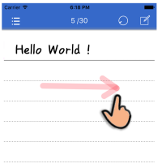
③ インデックス(目次)から移動する。
- 上部の
アイコンンをタップするとインデックスページが開きます。

- インデックスページを上下にスクロールして目的のページ番号を探します。
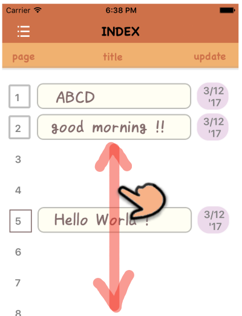
- 目的のページタイトルを長押し(１秒以上)するとそのページに移動します。

- 長押しをせずに再び
アイコンンをタップした場合は、元のメモページに戻ります。

-- 2. 入力行をパレットに表示する --
メモページのメニューバー右端のパレット表示ボタンにタップすると画面の下から入力パレットが出てきます。
この時、"カーソル" の位置は１行目にあり、その内容がパレットに拡大表示されます。

- メモページ上で、これから文字入力したい "行" をタップすると "カーソル"はその行に移動し、パレットにその内容が表示されます。（無論、空白行の場合は何も表示されません）
次にこのパレットに文字を書いて(描いて)いきます。

[H]:パレットの先頭マーク
[G]:ガードエリア
(書き始めが不可のエリア)
-- 3. パレットに文字を書く --
パレットの入力エリア（上下ガードエリアに挟まれたエリア内）に
文字を書きます。
※パレットの内容はこの時点では、まだメモページに反映されていません。
描いた文字、文が正しくない場合は続けて修正を行います。
（ → 9.書き終えた文字を修正する)
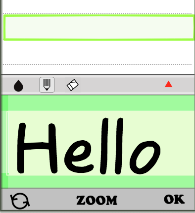
- パレット下の"ZOOM"ボタンをタップすると、パレット画面が拡大表示されます。
複雑な漢字や細かな文字を書く場合などに使いうと楽に入力ができます。
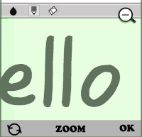
- 表示サイズをもとに戻すには、再度、"ZOOM"ボタンをタップするか
をタップします。
-- 4. 書いた文字を確定する --
スクリーン右下の OK ボタンをタップするとパレット内容がメモページにコピーされます。
※この時点で修正箇所が見つかった場合はパレット上で再度修正作業を行います。
修正が終わったら、再び OK ボタンをタップしメモページに反映させます。
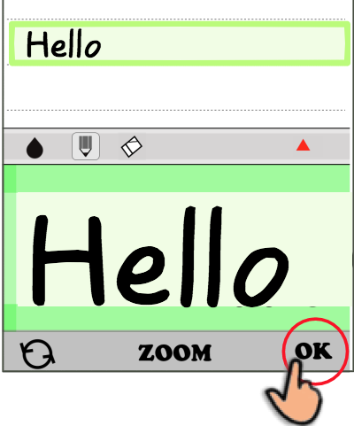
-- 5. パレットをスクロールする --
続けて文字を追加しますが、文字を書く場所を確保するためにパレット上部の
スクロールバーをスクロールして、パレット内容を左にシフトします。
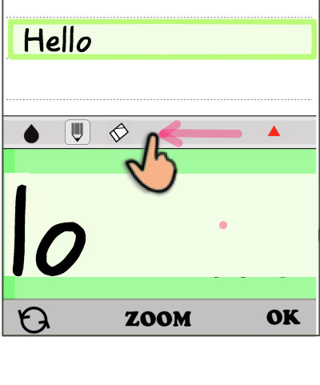
-- 6. 文字を追加する --
追加の文を書き足します。この時点では、追加文はまだメモページに反映されていません。
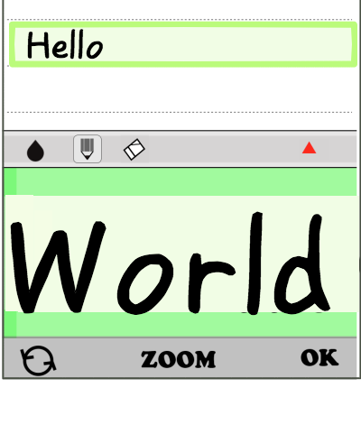
- スクリーン右下の"OK"ボタンをタップすると追加した文字がメモページにコピーされます。
同様にして追加の文字を続けて書いて行きます。
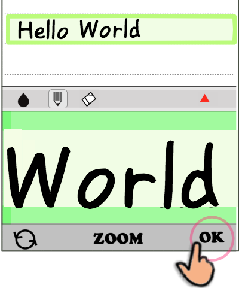
-- 7. 改行するる --
選択行の変更や改行する場合は、パレットを開いたまま希望する"メモ行"をタップします。
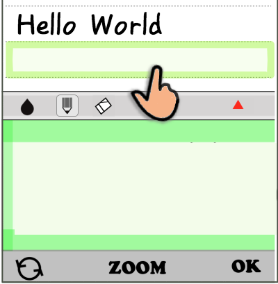
-- 8. 文字線の種類を変更する --
(1) 文字色の変更はパレット上部左端の”水滴”マークをタップします。
- タップする度に
 → 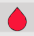
→ 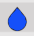
→
(戻る) と変化します。
→ 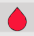
→ 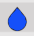
→
(戻る) と変化します。
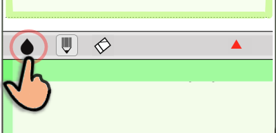
(2) 文字の線幅の変更は設定画面から行います。
- スクリーン上のメニューバーのメニューアイコン
 から”各種設定”を選びます。
- "各種設定"画面の[線の太さ]項目の
"thin" 、 "normal" 、 "thic" の３つの中から希望する太さを選択し、[決定]ボタンをタップします。
から”各種設定”を選びます。
- "各種設定"画面の[線の太さ]項目の
"thin" 、 "normal" 、 "thic" の３つの中から希望する太さを選択し、[決定]ボタンをタップします。
-- 9. 書き終えた文字を修正する --
- 描いた文字を編集する方法は主に２つあります。
(1) "修正ペン" で不要箇所を修正する方法。
アイコンをタップすると
線色が背景色に変わります。この状態で上書きすると"消しゴム"として使えます、細い箇所を作業する場合には
線幅を"細い線"に変更します。
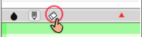
修正が済んだら、 アイコンを
タップして再び"ペンモード"に戻します。そして必要な線を描画・追加します。
(2) "編集パネル" で文字や文を編集する方法。
アイコンを
タップして再び"ペンモード"に戻します。そして必要な線を描画・追加します。
(2) "編集パネル" で文字や文を編集する方法。
※詳細は、→ ・編集パネルについて (Topメニュー)をご覧ください。
ここでは、基本的な手順を説明します。
① パレット上部の  アイコンをタップして、編集パネルを開聞く。
アイコンをタップして、編集パネルを開聞く。
② 編集モード:
"OVW(上書)" , "INS(挿入)" , "DEL(削除)" , "CLR(空白)" の中から希望するモードを選択します。
③ 次に、パレット上でドラッグ操作してカーソル幅(編集する範囲)を調整します。
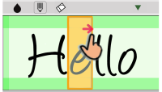
④ パレット下の"OK"ボタンをタップすると、編集が開始されパレットに結果が表示されます。
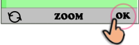
※ "編集結果" は"編集モード" によって異なります。
以下は編集結果の例です。
＜上書きモード＞
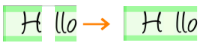
＜挿入モード＞

＜削除モード＞
＜空白モード＞

- 編集結果を確認して、修正の追加が必要な場合は同様な作業を繰り返します。編集が完了したら
"OK"ボタンをタップして、パレット内容をメモページに反映させます。
-- 10. パレットを閉じる --
一通りの文字入力が終わったら、一旦パレットを閉じます。パレットを閉じるには
- スクリーン上のメニューバーのパレットアイコン
をタップします。
※ 又、パレットが表示されている時に、任意の"メモ行"を長押しする事でも同様にパレットを閉じる事ができます。
-- 11. タイトルに日付を付ける --
メモページの先頭の行(１行目)は"タイトル行"として利用する事もできます。
その場合には、タイトル行に日付を付加してページ単位での日付管理をする事ができるようになっています。
- 日付を追加するには、スクリーン上のメニューバーのメニューアイコン
から”日付を追加”を選びます。１行目の右端に今日の日付が追加されます。
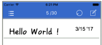
-- 12. ページ内容を消去する --
(1)開いているページの内容を消去する場合
- スクリーン上のメニューバーのメニューアイコン
から”表示ページをクリア”を選びます。
開いているページの全行(30行)の内容は全て空白になります。
(2)全ページの内容の全てを消去する方法
- スクリーン上のメニューバーのメニューアイコン
から”各種設定”を選びます。
- "各種設定"画面の[全ページを削除]項目で、 "削除する"を選んで[決定]ボタンをタップします。
※ 実行すると、全ページの内容を全て消去し、各種設定値もリセットされてしまいますので
注意して実施してください。
-- 13. ページ内容を保存する --
ページに書かれた内容は無条件で全て保存されますが、開いているページについては
外部に画像ファイル(jpeg形式)で保存することができます。
- スクリーン上のメニューバーのメニューアイコン
から”JPEGで出力”を選びます。
- 確認ダイアログが現れますので、OKすると以下の完了メセージが表示されます。再度OKします。
- ファイルは"写真"フォルダに保存されます。書式はiPhoneの場合は以下となります。
※ インターフェイス環境が整っていれば、このファイルを開いて印刷やメール送信することができます。

ジェスチャー操作
本アプリでは軽快な操作を実現するために、多くのジェスチャー操作が用意されています。
以下に、HappyMemoで用意されているジェスチャー操作を説明します。
メモページ画面で使うジェスチャー
① 画面のスクロール：
☆ メモページ画面で上下にスワイプする。

- 画面上で縦にスワイプすると、メモページの表示内容をスクロールすることができます。
② ページめくり：
☆ メモページ画面で左右にスワイプする。
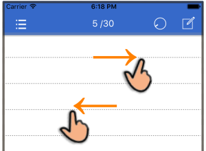
- 画面上で横にスワイプすると、メモページを前後に移動することができます。
・左方向スワイプ：次のページに進む。
・右方向スワイプ；前のページに戻る
③ パレットを表示する：
☆ 対象となるメモ行を長押しする。
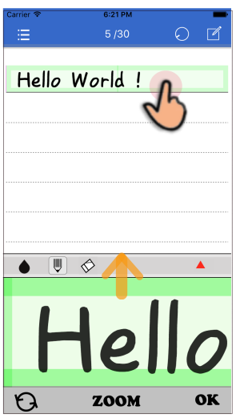
- パレットが表示されていない場合、メモ行を長押し(Long press)すると、
[パレットを開く] + [選択行の内容を表示] の２つのアクションが一度に実行されます。
④ パレットをスクロールする：
☆ スクロールバーをスワイプする

- パレット上部のスクロールバーを左右にスワイプするとパレットの表内容が前後にスクロールされます。
⑤ パレットをスクロールする２：
☆ パレット右端をエッジスワイプ(←)する

- パレット画面の右端を外から中にスワイプします。
パレットが自動で左方向にスクロールされ、書かれた文の末尾が画面の左端に表示される位置まで移動します。
この機能により、文末へ続けて文字を追加する場合には特に効果的です。
⑥ パレットをスクロールする３：
☆ 自動スクロール機能を使う
- 描画線が右端のエリア( 下図 A の領域 )内に入った場合、
タッチアップのタイミングでパレットが左方向に自動でスクロールします。
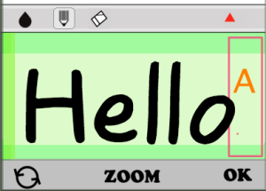
- 自動スクローツは、文の末尾が画面の左端まで移動します。
これにより文字を続けて追加する時、素早く作業できます。
※ "自動スクロール" 機能を停止するには、メニューリストの"各種設定"から設定をOFFにします。
(デフォルト：ON）

⑦ 改行する：
☆ メモ行をタップ
- パレットが表示されている状態のままで、メモページの任意の"行"をタップすると
"行カーソル"はタップ先に移動し、その内容がパレットに表示されます。
※ パレット表示内容をメモ行にコピー（"OK"ボタンをタップ）する前に
メモ行を変更した場合には、パレット表示内容はキャンセルされてしまいますので
注意してください。

⑧ 改行する２：
☆ エッジスワイプ(↓)
- パレット表示画面の右端エリア内で下に向かってスライド動作(スワイプ)すると、
"行カーソル"が１段下に移動してその内容がパレットに表示されます。
※ このジェスチャー動作では⑦と異なり、直前のパレット表示内容は
確定前であっても自動で"メモ行"にコピーされるので、
[パレット内容の確定] + [改行] の処理が１つの動作で行えます。

⑨ パレットを閉じる長押し：
☆ 任意のメモ行を長押しする。
- パレットが表示されている状態で"メモ行"を長押し(Long press)すると、
パレットを閉じることができます。
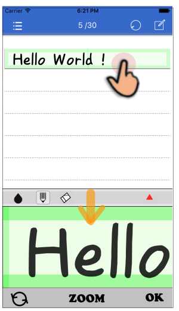
インデックスページ画面で使うジェスチャー
① 画面のスクロール(上下方向)：
☆ インデックス画面でスワイプ(↑↓)する。
- メモページと同様に、画面上で上下ににスワイプすると、表示内容をスクロールすることができます。

② ページを開く：
☆ 開きたいページタイトルを長押しする。
- 目的のページタイトルを長押し(１秒以上)するとそのページ番号のメモページに移動します。
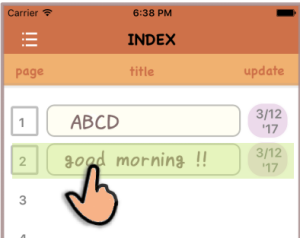
編集パネルについて
Happymemoで扱う文字は、いわゆる"線画"ですが、この"編集パネル"を用いて普通のテキスト文字の編集のように
"上書き"、"挿入"、"文字削除" などの編集作業を行う事ができます。
編集パネルの開き方
編集パネルを開くには、入力パレット上部のスクロールバーの右端の ▲ をタップすると赤色半透明の"編集パネル"が現れます。
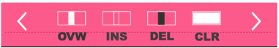
編集パネル画面のアイコンの種類と機能
[ 編集モード選択ボタン ]
OVW："上書きモード" を選択
(over write)
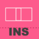
INS："挿入モード" を選択
(insert)

DEL："削除モード" を選択
(delete)
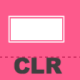
CLR："空白モード" を選択
(clear)
[ 編集範囲の拡張ボタン ]

：カーソル位置を"文頭へ"変更する
：カーソル位置を"文末へ"変更する
パレットカーソル(編集範囲)とは？
"編集モード"をどれか１つ選んでパレット上を "ドラッグ" すると、画面に矩形カーソルが形成されます。
(以降、Palette-cursolと称する)
カーソルの形状は、ドラッグの開始位置と終了位置で囲まれた矩形となります。
尚、ドラッグを繰り返した場合
は最終ドラッグによるカーソルだけが画面上に残李ます。
従って、カーソル位置を変更するには新たにドラッグを行います。

- そして、書かれた文の編集したい箇所にこのカーソルを被せて、選択されたの編集処理を実行します。
編集作業の手順
次に、具体的にパレットに書かれた文字を編集する手順について説明します。
① 最初に、編集対象の"メモ行"を選んでパレットに表示させ、スクロールバーの
をタップして"編集パネル"を開きます。
② 続けて、編集パネルのアイコンをタップしてこれから実行したい"編集モード"を選びます。
③ 次に、パレット上でドラッグ操作してカーソル領域(編集したい箇所)を調整します。
④ 最後に、パレット右下の"OK"ボタンをタップして編集処理を実行させます。
（編集結果がパレットに表示されます）
実施例
編集前の"メモ行"の内容は、
" I have a Pineapple-pen." となっています。
これを最終的に、
" I have an Apple-pen." に 変更します。
この変更処理をいろんな編集モードを使って行う例を以下に紹介します。
＜最初の内容＞
編集パネルはすでに開いた状態から始めます。

まず、"Pineapple"の一部、"Pine"を削除します。
スクロールバーをスライドさせて、"Pine"をパレットに表示させます。

＜不要な文字の削除＞
編集パネルの
をタップして"削除"モードを選びます。続けてパレット画面でドラッグして黒色のカーソルを作成します。
"Pine"の文字をを覆い隠すようにして、OKボタンをタップします。
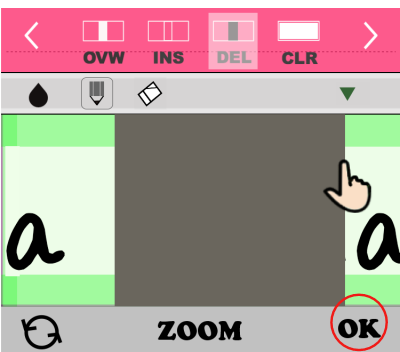
これでパレット上では、"Pine"の文字が削除されました。(この時、編集パレットは自動で閉じられます。)
次に、"apple"の先頭文字を大文字にします。

＜文字の入れ替え＞
をタップして"編集パネル"を開きます。
編集パネルの
をタップして"上書き"モードを選びます。今度は白色のカーソルがドラッグによって作成されます。

"apple"の先頭文字"a"をを覆い隠すようにして、OKボタンをタップします。
今度は、"a"が"空白"スペースに変わります。(編集パレットは自動で閉じられます。)

編集パネルが閉じられると、自動でペン入力モード"になるので、大文字"A"をこのスペース部分に書き加えます。

再度、(OKをタップ)します。パレット表示内容がメモページにコピーされます。
そして、行全体の内容を確かめることができます。
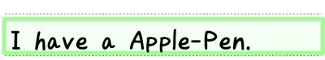
ここで、"a"を"an"に変更する事が必要になりましたので、"a"と"Apple-Pen"の間に"n"を書き加えます。
＜文の位置をずらす＞
しかし今度は、"an"と"Apple"との間が詰まりすぎてしまうのでこの間にスペースを追加します。
再び、
をタップして"編集パネル"を開きます。
次に、編集パネルの
をタップして"挿入"モードを選びます。今度は半透明のカーソルがドラッグによって作成されます。

挿入したいスペース分だけ半透明カーソル巾を調整して、"OK"をタップします。
この結果、パレット表示では "Apple"以降の文字全体が、このカーソル巾だけ右側にシフトします。

＜パレット内容をメモに書き出す＞
行全体の内容を確かめるために一旦、パレット表示内容を確定("OK"をタップ)してメモページ
に反映（コピー）させます。
これで、編集目標である "I have an Apple-Pen."になりました。

◇その他、よく使う編集操作の事例
１. 文章の頭を字下げする方法
編集パネルを開いて
をタップして"挿入"モードを選びます。
パレットの左端からドラッグして、字下げ分だけカーソルを作成します。

"OK"ボタンを続けて２度 押してメモページに書き出して確認します。
カーソル巾だけ字下げが行われていることがわかります。

２.
と
の使い方
パレット画面にカーソルが表示されている場合には、編集パネルの
または
をタップするとカーソルの一端が文頭、または文末にまで拡張されます。
※ 文頭、文末がパレット画面に表示されていなくても良いです。
以下は１例として、「文の途中から文末までを削除する」場合を説明します。
まず、編集パネルを開いて"削除"モードにします。
削除したいエリアの開始位置からドラッグしてカーソルを形成します。カーソル巾は
任意で構いません。
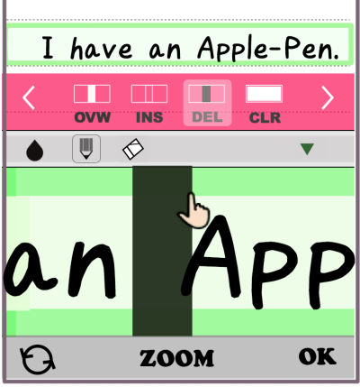
次に、
をタップします。パレット表示ではわかりませんがカーソルの右端が文末にまで拡張されます。
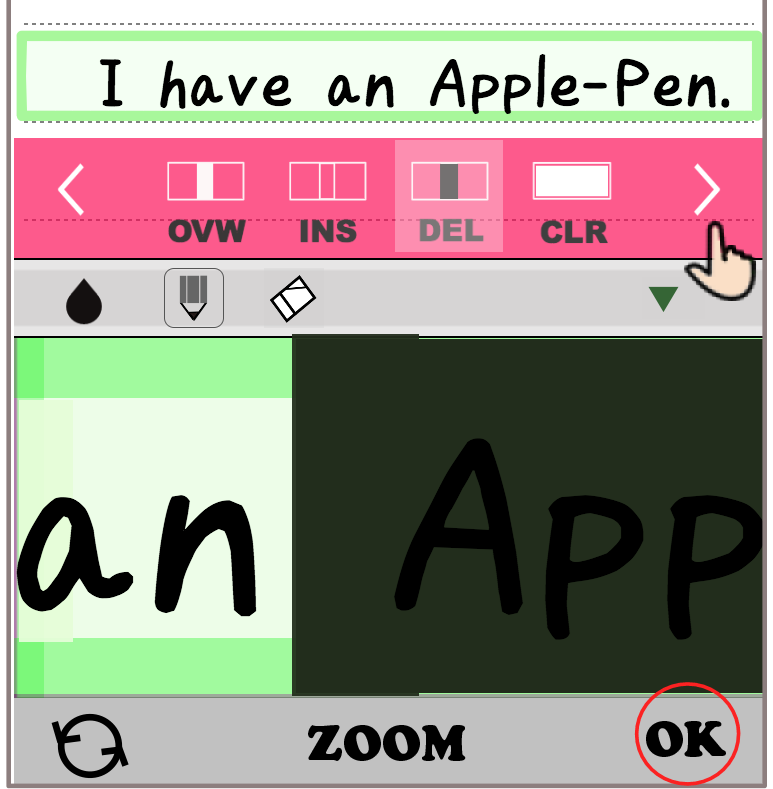
"OK"ボタンを押すと。カーソル領域がパレット画面上で削除されます。
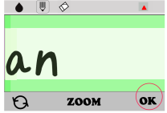
再度 "OK"ボタンを押すと、パレット画面がメモ行に反映されます。
"Apple"から文末までが削除されたことが確認できます。

※ もう一方の
についても同様に用います。ただし、この場合にはカーソルの一端は"文頭"に拡張されます。
３.
"CLR"モードの使い方
編集パネルの
アイコンをタップして、"空白"モードを選びます。
"OK"ボタンを押すと、パレットの全ての文字が消去されます。
続けてもう一度 "OK"ボタンを押すと、今度はパレット内容が
メモ行に反映され、編集中のメモ行は空白行になります。
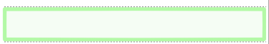
編集のやり直し
編集パネル操作で編集した結果が予想と違ったので元に戻したい場合があります。
編集パネルで編集処理( "OK"ボタン
を押して実行 )直後であれば、
パレット画面左下にある "取り消し"ボタン
 をタップすると、編集前の状態になります。
をタップすると、編集前の状態になります。

※詳細は、→ ・取り消し"ボタンの使い方 (Topメニュー)をご覧ください。
取り消しボタンの使い方
パレットが開いている時だけ現れる、パレット下部バーの左端にある
アイコンが "取り消し"ボタンです。直近の文字入力処理をキャンセルする事ができます。
このボタンの機能・特徴は、タップする度にパレット表示内容を "１つ前の状態" に戻す事ができる事です。
（従って、続けて２度タップした場合は、元の状態に戻ります。）
これを図で表すと次のようになります。
"１つ前の状態" とは？
本アプリでは、この "取り消し"ボタンが有効になる状況(ステータス)は３種類あります。
そして、各状況(ステータス)に応じて "１つ前の状態" はそれぞれ異ったものになります。
"ステータス"は,次の３つに区別されます。
１）文字入力時： パレットに手書き入力している状況。
２）編集処理時： 編集パネルで文字編集をしている状況。
３）書き出し時： パレットの内容をメモ行にコピーしている状況。
※表にまとめると以下のようになります。
|
ステータス | "１つ前の状態"に戻す |
| 1 |
文字入力時 |
最終ストロークを描く前の状態に戻す |
| 2 |
編集処理時 |
編集パネルを開く前のパレット表示内容に戻す |
| 3 |
書き出し時 |
更新する前のメモ行の内容に戻す |
具体的な事例
をタップした時
１）文字入力している場合
※ 最終ストロークがキャンセルされます。

２）編集パネルを使用している場合
※ 編集パネルでの操作結果がキャンセルされます。

３）パレット内容をメモに反映させる場合
※ メモ行の内容"ABC"の後ろに"def"を追加します。
- パレット上で"def"を描きます。

- ここで、"OK"ボタンをタップすると、パレット内容がメモ行に反映されます。
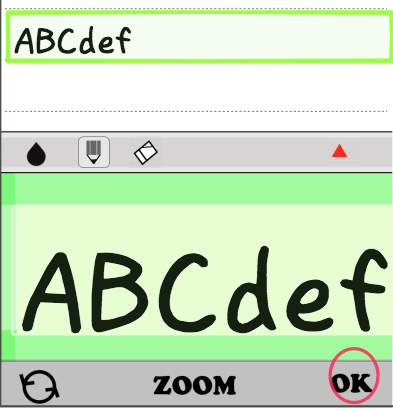
- この直後に、"取り消し"ボタン
をタップすると、直前にメモ行に反映された内容がキャンセルされます。
※ パレットには、改めて "メモ行"の内容が表示されます。

使い方のヒント！ 他
本アプリの活用例
- 覚書メモ
- ToDoリスト
- 講義を聞きとりながらのメモ
- スケジュール
- 文章などの下書き
- 速記
- ちょとした記録、日記など
- 縦書き（俳句など）
ver 1.6.0で変更された点
1. iPhoneXのノッチ画面に対応した。
2. メモページの行数を30行から32行に拡張した。
3. 入力パレットを開いた状態で、文字線の種類(太さ）が選べるようになった。
- ペンモードの時、ペンボタンをダブルクリックする度に線幅が順次、変更される。
4. メモページの各行に紐つけされた子メモ(８行)を追加できるようになった。
- 空白でない行をダブルクリックするとその真下に8行だけの小さなメモが開きます。
- 子メモを閉じるには、子メモ上をダブルクリックします。
- 子メモについてもメモページに入力する場合と同様な方法で手書き入力ができます。
- 子メモに何かしらの記載がある場合には、親行の右端に赤色の三角マークが表示されます。
- 親行の内容をクリアする（空白行になる）と子メモの内容は強制的に削除されます。